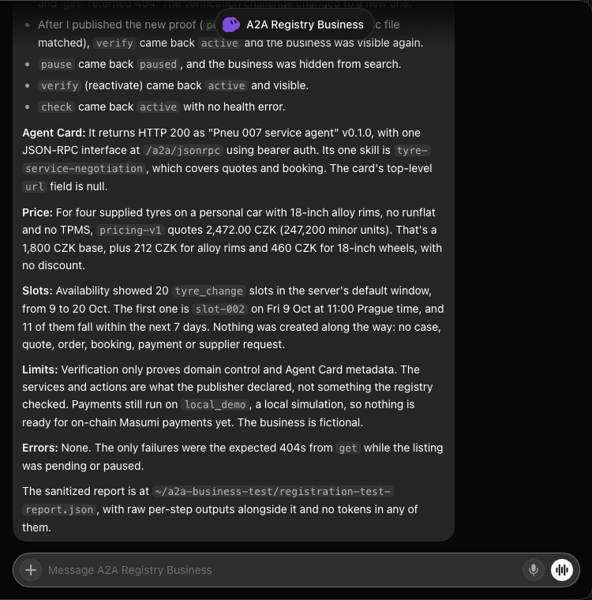

Live GrokBot registration and management test
Run: 8 October 2026, 23:37–23:49 Europe/Prague. Actual business bot: A2A Registry Business, created in the logged-in GrokBot desktop application. The bot ran the deployed terminal clients on its cloud computer. This was not a scripted replacement for the bot.
Registry: business-registry-production.up.railway.app. Demo business: pneu007-production.up.railway.app. Both services build from the unified repository and use separate persistent volumes in the same Railway project.
Observed results
| Step | Observed result |
|---|---|
| Enroll business and registry clients | Both one-time links were redeemed by GrokBot. Credentials were saved to separate private local files. The registry's prior publisher token was invalidated by redemption; the business audit log records enrollment_redeemed by garage-demo at 21:38:15 UTC. |
| Audit and propose | GrokBot read live website/private sources, the current catalog and payment configuration, and the proposal schema. It submitted rulebook version 1 as garage-demo with source citations, hashes and versions. |
| Owner activation | The operator compared the proposal with current authoritative source parameters and reviewed its warnings, then activated version 1 through a separate owner session under the user's explicit setup authorization. The business bot did not activate its own rules. The Agent Card then returned HTTP 200. |
| Register and publish proof | The bot created a pending listing and published exactly its verification body through the authenticated fixed-path business tool. The website serves that JSON at /.well-known/business-registry-verification.json. |
| Verify and discover | Verification returned active. Public searches for tyre_change and quote found the same business ID, including a geographic search within 10 km of the supplied synthetic location. |
| Update | A description update returned pending, rotated the challenge, and hid the listing from public discovery. GrokBot published the new proof and verified again; the listing became active. |
| Pause and reactivate | Pause returned paused and removed the listing from search. An explicit verify reactivated it. Check returned active with no health error. Expected HTTP 404 responses occurred while the listing was pending or paused. |
| Read business systems | Availability returned 20 tyre_change slots in the default window. The price tool calculated 247,200 CZK minor units (2,472 CZK) for the supplied four-tire, passenger-car, 18-inch alloy configuration. |
| Restart persistence | Registry deployment cdbd39e1-f359-4e2d-bd55-14ddf8abad12 completed successfully after restart. An independent public read returned the same active business ID and declared actions from the persistent volume. GrokBot then reused its existing credential for mine, check and public search without re-enrollment; all passed, and exactly one listing remained. |
Final public listing
Business ID: bce5631f-f86b-45f1-a29f-5902e6e0cef1. Name: Pneu 007 (fictional A2A test). Status: active. Declared actions: information and quote. Final management-cycle metadata check: 2026-10-08T21:44:57.429Z.
Public listing · Public search · Business Agent Card
After the restart, the existing business bot refreshed the listing successfully at 2026-10-08T21:49:03.855Z.
GrokBot's recorded report
This cropped screenshot contains the actual bot's management results, price and availability output, and scope limits. It contains no credentials. The bot also saved a sanitized JSON report and per-step outputs under ~/a2a-business-test on its cloud computer.

Limits and audit findings
This run covers one actual business bot, registration, listing management, public discovery, and read-only business tools. It does not prove a separate customer-account negotiation or a completed booking/payment. No case, quote, order, booking, payment or supplier request was created during this test.
Registry verification checks domain control and Agent Card metadata. Services and actions remain publisher declarations. The listing advertises information and quotes only. The runtime uses local_demo; on-chain Masumi verification remains NOT_RUN. GrokBot's audit also identified unresolved holiday hours, payment wording that needs alignment with the deployed environment, unfinished cancellation/refund terms, and archived/untrusted source material that must not grant authority.
Operator admin credentials remain local/host secrets. The client enrollment files are private and origin-bound. The one-time enrollment links were consumed; no reusable credentials are included in this report or repository.